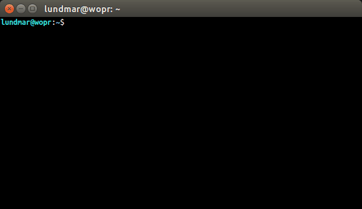

What is Go TTY?Go TTY or "gotty" is a really simple TTY terminal application which features a simple commandline interface to easily connect to TTY devices for basic input/output.
Usage
The commandline interface is straightforward:
$ gotty --help
Usage: gotty [<options>] <tty device>
Options:
-b, --baudrate <bps> Baud rate (default: 115200)
-d, --databits 5|6|7|8 Data bits (default: 8)
-f, --flow hard|soft|none Flow control (default: none)
-s, --stopbits 1|2 Stop bits (default: 1)
-p, --parity odd|even|none Parity (default: none)
-o, --output-delay <ms> Output delay (default: 0)
-n, --no-autoconnect Disable automatic connect
-v, --version Display version
-h, --help Display help
In session, press ctrl-g + q to quit.
The only option which requires a bit of elaboration is perhaps the --no-autoconnect option.
By default gotty automatically connects to the provided device if present. If the device is not present it will wait for it to appear and then connect. If the connection is lost (eg. device disconnects) it will wait for the device to reappear and then reconnect.
However, if the --no-autoconnect option is provided gotty will exit if the device is not present or exit if an established connection is lost.
Go TTY features full bash autocompletion support.
Installation
From source tarball:
$ ./configure
$ make
$ make install
Ubuntu:
$ sudo apt-add-repository ppa:team-gotty/gotty
$ sudo apt-get update
$ sudo apt-get install gotty
Arch Linux:
Unofficial AUR package: aur.archlinux.org/packages/gotty
To install, follow instructions from the Arch Linux wiki.
License
Go TTY is open source released under the GPLv2 license.
Support
Submit bug reports via github here.